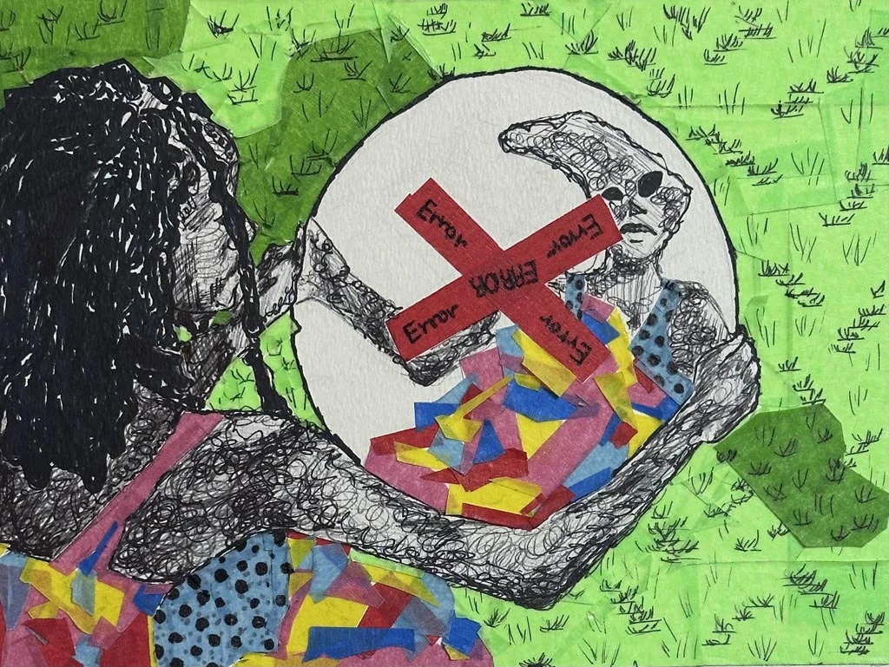

Planning
Let's Get a Score of 5!
Some steps to make that happen are:
- Be Consistent With Your Inquiry
- Sticking to your theme is crucial. This is the most important aspect of your portfolio. Your portfolio answers your question or theme.
- Your Skills
- The artworks themselves need to demonstrate skill and effort. Skill is important, but by itself, it will not guarantee a top score. You need both skill and thoughtful execution to achieve a 5 on your AP Art portfolio.
- Revision and Processes
- Showcasing improvement is key to earning a high score. Including some process pieces along the way will work in your favor.
- Time Management
- You cannot produce a well-crafted painting or sculpture in just one hour. Set aside dedicated time for your portfolio to avoid submitting unfinished work.
- Applying Feedback
- Feedback is to an artist what water is to soil—it helps you grow and progress in your artistic journey.
- You're Like a Bird
- Don’t confine yourself. Allow room for experimentation, even when it feels intimidating.
In sum, to put yourself out there, you have to be willing to bare yourself to the world. Unlike in the real world, this openness can increase your chances of achieving a high score.
Learning Tools
Carry a Sketchbook
- Jot down anything that inspires you.
- Experiment with color schemes.
Look at Art
- Periodically observe art from your peers and ask questions.
- Research famous artists and compare processes.
- "Everything is a remix." Inspiration is not plagiarism.
Ethical idea picking — here is how to do it.
Attend Art Lectures
- Nothing is more insightful than learning directly from a professional.
- Exposure to new ideas often happens in this setting.
Contact Me
190345 South RoadPashing Test, N/A 24450
Phone: 981-555-1234